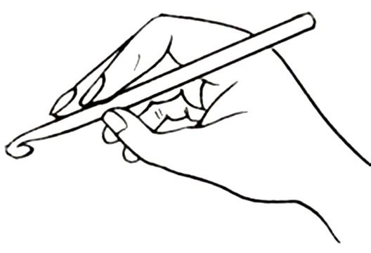
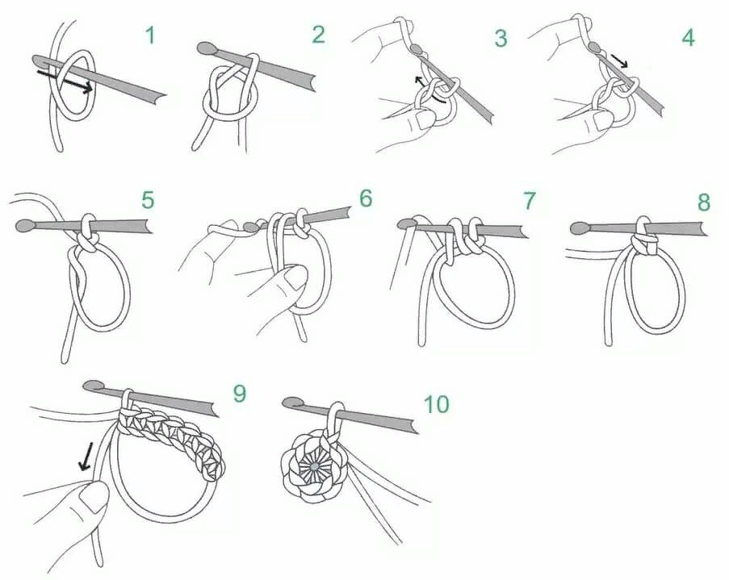
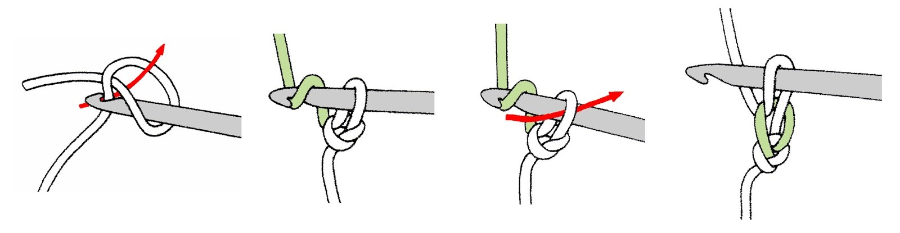
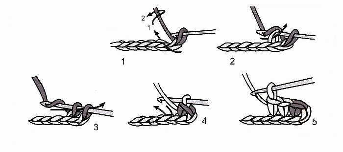
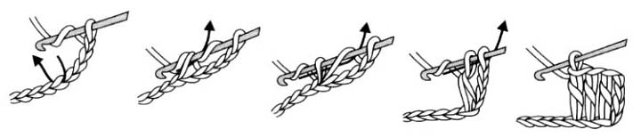
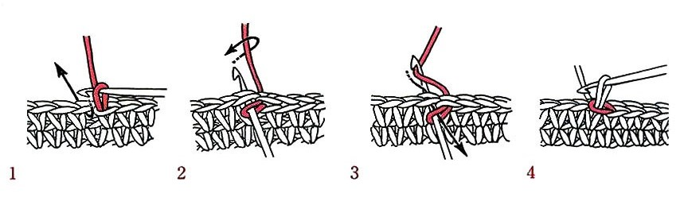
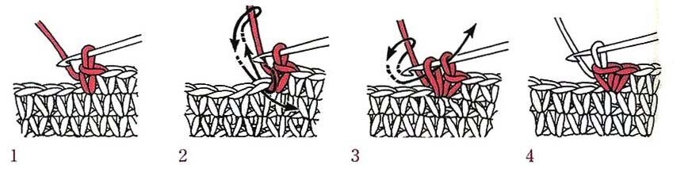
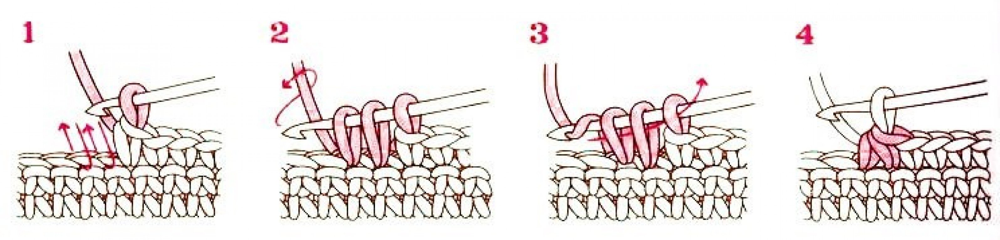

Knitting room
Knitting room
Knitting room
Knitting room
Условные обозначения и основные понятия
Для того, чтобы начать вязать крючком, необходимо желание и терпение. Сразу красиво вязать получается далеко не у всех. Важно, чтобы все петельки получались ровные, как одна.
Это приходит с опытом и каждодневными тренировками.
Прежде всего, главное - держать крючок в руке правильно. Верное положение инструмента (рисунок 1) обеспечит идеальные петли и удобство. Самым удобным считается держать крючок, как ручку.

Рисунок 1 - Верное положение крючка в руке
Также, нужно знать расшифровку условных обозначений, основные понятия и технику вязания различных петель.
- КА - кольцо амигуруми.
- ВП - воздушная петля.
- СБН - столбик без накида.
- ССН - столбик с накидом.
- СС - соединительный столбик.
- ПР - прибавка.
- УБ - убавка.
Расшифровка обозначений:
Кольцо амигуруми (КА).
Начало вязания мотивов, салфеток, цветов, которые вяжутся по кругу, выглядит одинаково: необходимо связать цепочку из определённого числа воздушных петель и замкнуть её в кольцо. Существует ещё один способ, который называется «кольцо амигуруми» (рисунок 2).
Часто кольцо называют японская или скользящая петля, а также волшебное кольцо. Обычно такой способ вязания используют в вязании круговых мотивов, чтобы не было заметно отверстия в центре изделия. Преимущество способа заключается в том, что, потянув за конец нити, его можно полностью стянуть. Этот приём очень удобно использовать при вязании игрушек.
Этапы вязания:
1. Создаём петлю.
2. Крючок вводим в петлю и цепляем рабочую нить.
3. Затем выводим нить через кольцо. Образуется петля на крючке.
4. Вытягиваем нить через петлю.
5. Таким образом, у нас получился узелок. Эта петля не считается столбиком, поэтому не берем ее в расчет при дальнейшем вязании.
6-7. Вводим крючок в кольцо под двумя нитями (кольцом и хвостиком) и вытягиваем нить наружу.
8. Провязываем две образовавшиеся петли на крючке. У нас получился первый столбик без накида.
9. Провязываем то количество столбиков, которое указано в выбранной схеме.
10. Затягиваем петельку туго в кольцо.
Кольцо амигуруми готово!

Рисунок 2 - Этапы вязания кольца амигуруми
Воздушная петля (ВП).
Воздушная петля необходима для того, чтобы начать вязание. Именно с неё вяжется большинство изделий и узоров.
Этапы создания:
1. Продеваем крючок в нашу петлю и зацепляем рабочую нить.
2. Вытягиваем нить, чтобы получилась петля.
3. Выводим следующую нить сквозь петлю.
4. Воздушная петля получилась.
Чтобы сделать следующую петлю, выводим нить из образовавшейся петли на крючке. Повторяем до нужного количества петель.

Рисунок 3 - Этапы создания воздушной петли
Столбик без накида (СБН).
При помощи СБН вяжутся узоры, игрушки, и даже элементы одежды.
Порядок вязания:
1. Продеть крючок во вторую петлю от него (в основание лицевой стороны работы).
2. Захватить рабочую нить на крючок.
3. Протянуть движением руки на себя через вторую петлю от крючка.
4. Снова захватить нить и протянуть через обе петли (получился столбик без накида).
5. Повторять предыдущие шаги до конца ряда необходимое количество раз.

Рисунок 4 - Этапы создания столбика без накида
Столбик с накидом (ССН).
Благодаря ССН изделие будет более воздушным и рыхлым, так как из-за накида петля становится высокой.
Порядок вязания:
1. Накинуть на крючок рабочую нить и ввести его в четвёртую петельку ряда.
2. Зацепить рабочую нить, движением на себя вытянуть петлю на крючок.
3. Снова захватить рабочую нить крючком, протянуть её через первые две петли.
4. Ещё раз накинуть нить на крючок и протянуть через две последних петли (получился столбик с накидом).
5. Повторять предыдущие действия до конца ряда.

Рисунок 5 - Этапы создания столбика с накидом
Соединительный столбик (СС).
С помощью соединительного столбика обвязываются края изделия, поэтому петельки должны получаться ровными.
Этапы вязания:
1. Захватываем крючком рабочую петельку.
2. Вводим крючок под обе стенки соседней петли
3. Захватываем рабочую нить, протягиваем её сквозь петлю цепочки и петлю на крючке за один раз.
4. Соединительный столбик готов!

Рисунок 6 - Этапы вязания соединительного столбика
Прибавка (ПР).
Прибавка позволяет увеличить площадь вязаного изделия, так как в одну петлю ввязываются две. То есть, прибавка = 2 столбика без накида в одной петле.
Этапы создания:
1. Держим крючок в готовой первоначальной петле.
2. Вводим крючок в основание этой же петли и вытягиваем вторую петлю через основание.
3. Захватываем крючком рабочую нить, затем провязываем две петли вместе.
4. Прибавка в изделии готова.

Рисунок 7 - Этапы вязания прибавки
Убавка (УБ).
Убавка уменьшает площадь вязаного изделия, так как две петли берутся за одну.
Процесс вязания:
1. Вводим крючок в соседнюю петлю и достаём нить (должно быть две нити на крючке).
2. Ещё раз вводим крючок в соседнюю предыдущей петлю, захватываем нить (три нити на крючке).
3. Через все три нити протягиваем основную нить.
4. Убавка в изделии готова, так как мы объединили две петли в одну.

Рисунок 7 - Этапы вязания убавки
Подводя итог.
Теперь Вы знаете необходимые понятия, расшифровку аббревиатур, а также этапы вязания определённых петель. Благодаря базовым знаниям, полученным из этой статьи, можно связать что-нибудь простое и милое. Предлагаю обратиться к странице "Интересные статьи", где будут предоставлены ссылки на мастер-классы.
Чтобы подобрать материалы, которые понадобятся в применении техники вязания крючком, рекомендую Вам перейти в раздел "Необходимые материалы".